このエラーが表示された場合、'python' is not recognized as an internal or external commandWindows が PATH 環境変数に Python の実行ファイルを見つけられないことを意味します。
正しいディレクトリを PATH に追加することで、フルパスを入力しなくても、どのターミナルでも Python と pip を実行できるようになります。
開始する前に、以下の条件を満たしていることを確認してください：
| 前提条件 | 説明 |
|---|---|
| Python がインストールされていること | python.org または Microsoft Store の Windows 11 システム |
| 管理者権限 | システムレベルの変数を変更する場合に必要です。ユーザーレベルの変更には管理者権限は不要です。 |
| ターミナルの再起動 | PATH を変更した後は、新しいターミナルセッションを開き直す必要があります。 |
PATH、インストーラーのオプション、Python Launcher の詳細については、Python 公式ドキュメントの「Windows での Python の使用」の章（docs.python.org）を参照してください。
方法1: 公式インストーラーで PATH を追加する（推奨）
python.org のインストーラーは PATH を直接設定してくれるため、手動入力のミスを防げます。さらに、pip に必要な Scripts フォルダーも一緒に追加されます。
同じインストーラーでも、Modify「Modify」オプションを使用して既存のインストールに PATH を追加でき、アンインストールや再インストールは不要です。
操作手順
| 手順 | 操作 |
|---|---|
| 1 | python.org からインストーラーをダウンロードして実行します |
| 2 | 最初の画面で、「Add python.exe to PATH」オプションにチェックを入れます |
| 3 | 新規インストールの場合は「Install Now」をクリックします。インストール済みの場合は「Modify」を選択し、このオプションを有効にします。 |
| 4 | インストールが完了したら、閉じて開き直しますコマンドプロンプトまたは PowerShell |
| 5 | 以下のコマンドを使用してインストール結果を確認します |
インストール画面——必ず PATH オプションにチェックを入れましょう：
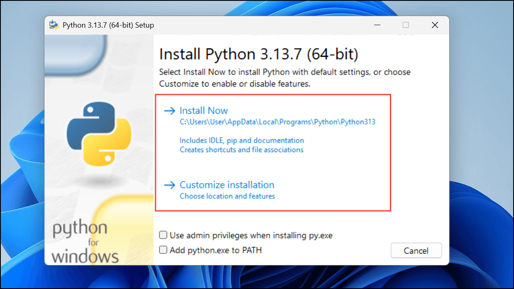
インストール済みの場合は Modify オプションを選択：
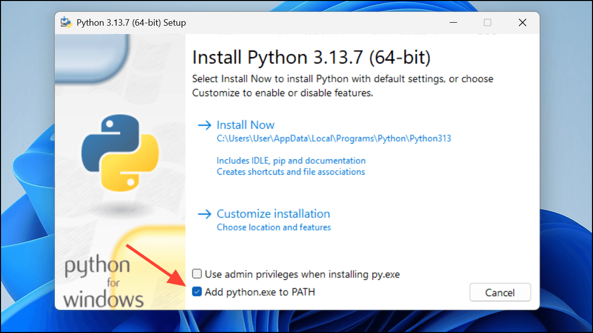
インストールが成功したかどうかの確認：
python --version pip --version where python where pip
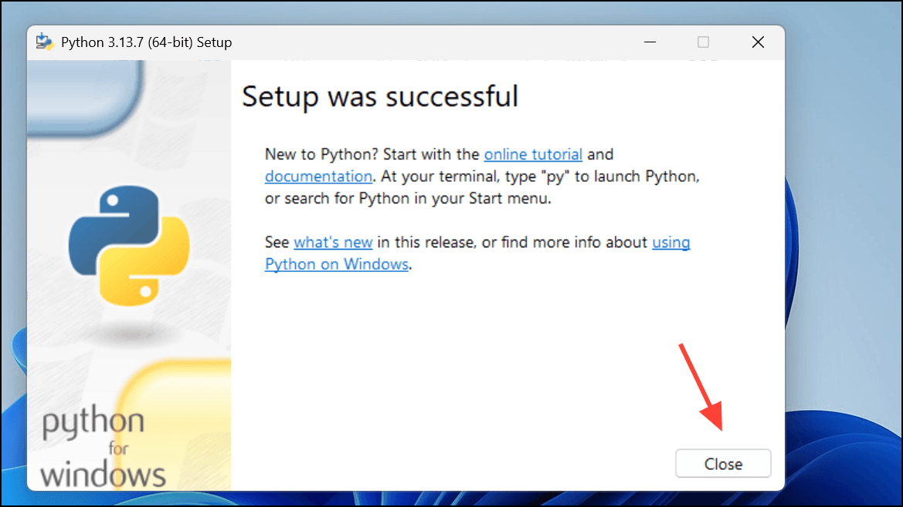
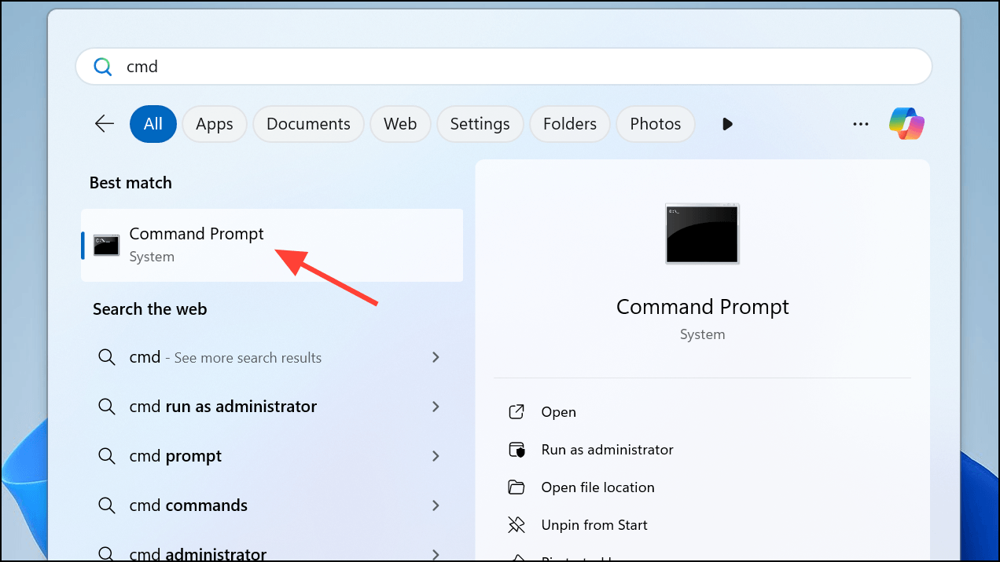
Python をインストール済みだが、そのときに PATH オプションにチェックを入れなかった場合は、インストーラーを再実行して「Modify」を選択し、Modify次に「Add python.exe to PATH」にチェックを入れ、インストール完了後にターミナルを開き直せばOKです。
方法2: Python を PATH に手動で追加する（ユーザーレベル）
Python のインストール時に PATH オプションを有効にしなかった場合、またはシステム変数に影響を与えずに現在のユーザーの環境変数だけを変更したい場合は、PATH を手動で編集できます。
操作手順
| 手順 | 操作 | 説明 |
|---|---|---|
| 1 | 按 Win+R「sysdm.cpl」と入力し、sysdm.cplEnter キーを押します |
システムプロパティウィンドウが開きます |
| 2 | 「詳細設定」タブに切り替え、「環境変数」をクリックします | 環境変数の編集画面が開きます |
| 3 | 「ユーザー変数」領域で「Path」を選択し、Path「編集」をクリックします |
現在のユーザーの PATH のみを変更するため、システムには影響しません |
| 4 | 「新規」をクリックして、Python のインストールディレクトリを追加します | 例：C:\Users\用户名\AppData\Local\Programs\Python\Python311 |
| 5 | もう一度「新規」をクリックし、ScriptsScripts サブディレクトリを追加します |
前の手順と同じパスの末尾に「\Scripts」を追加します\Scripts |
| 6 | 「上へ移動」を使用して、新しいエントリをリストの上位に移動します | システムに優先的に認識させるためです |
| 7 | 各ダイアログの「OK」を順にクリックして保存します | どのダイアログも忘れずに「OK」をクリックしてください |
| 8 | すべてのターミナルウィンドウを完全に閉じて、開き直します | PATH の変更は、すでに開いているターミナルには反映されません |
| 9 | 検証コマンドを実行します | python と pip がどちらも正常に動作することを確認します |
手順1——sysdm.cpl でシステムプロパティを開く：
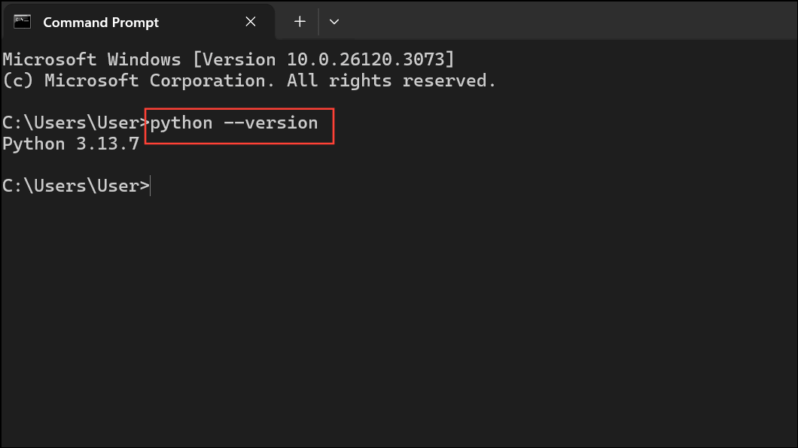
手順2——環境変数ウィンドウ：
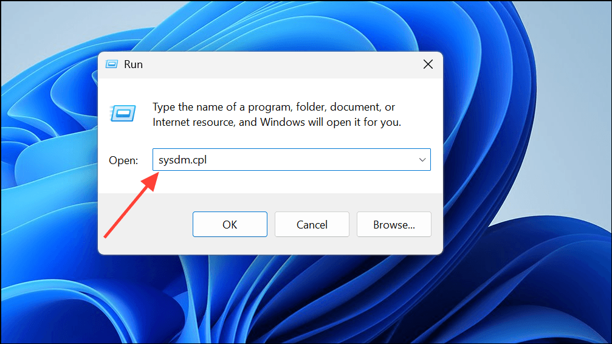
手順3——Path 変数の編集：
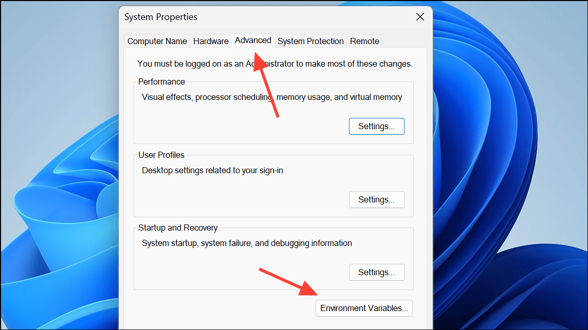
手順4——Python インストールパスのエントリを新規作成：
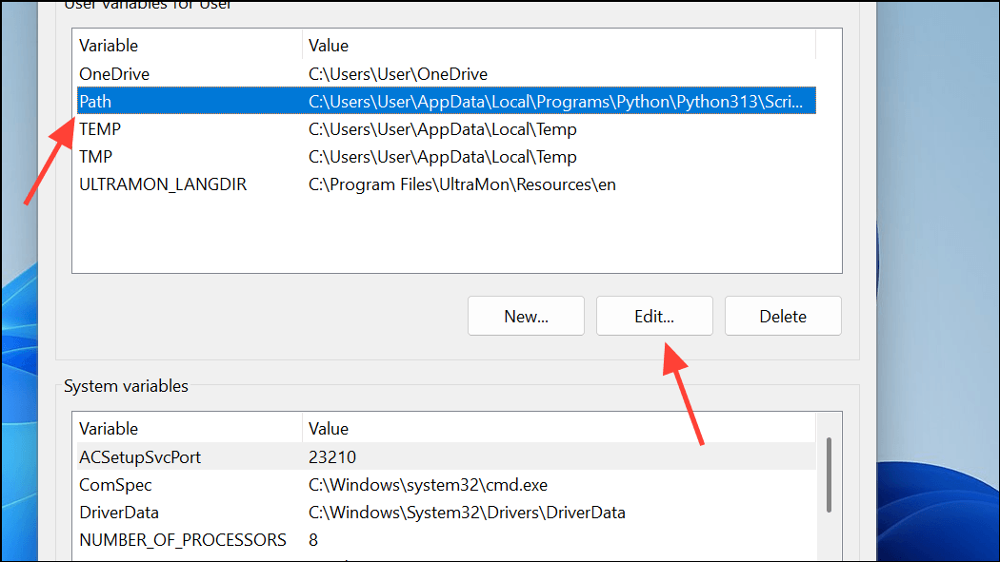
手順5——Scripts ディレクトリの追加：
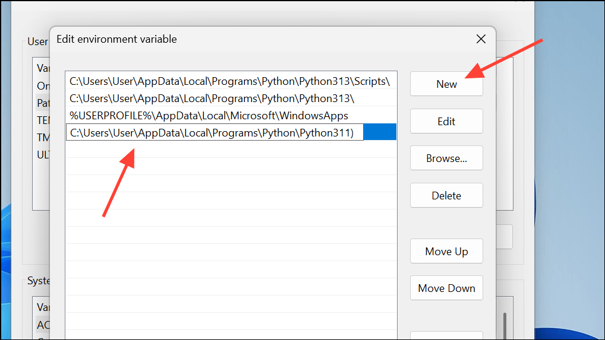
手順6——エントリを上に移動して優先的に見つけてもらう：
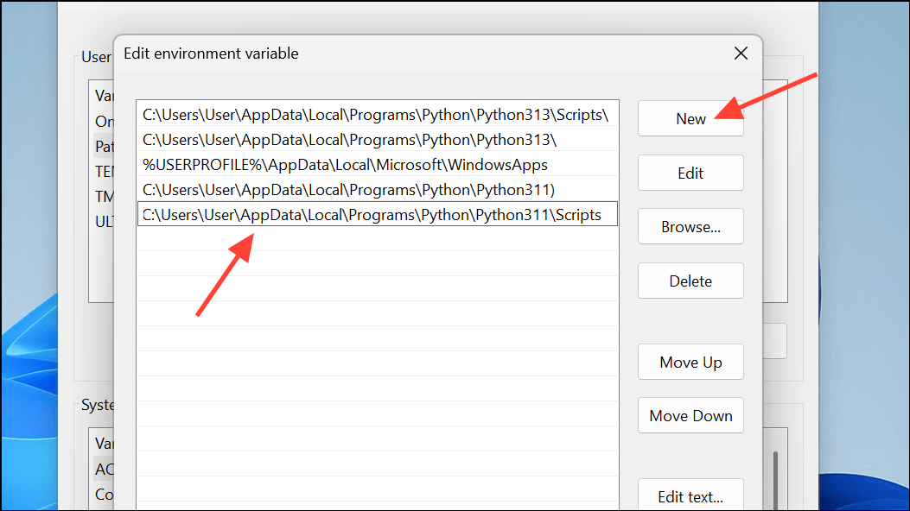
手順7——すべてのダイアログの保存を確認：
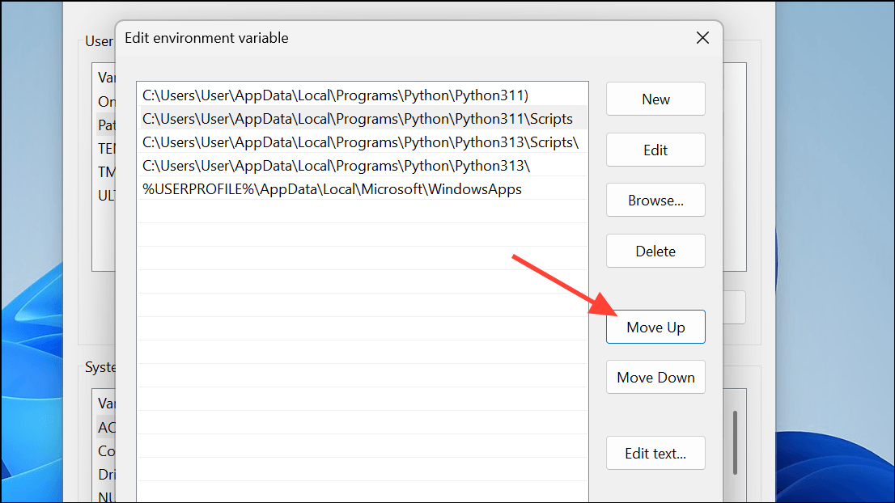
手順9——結果の検証：
python --version pip --version where python where pip
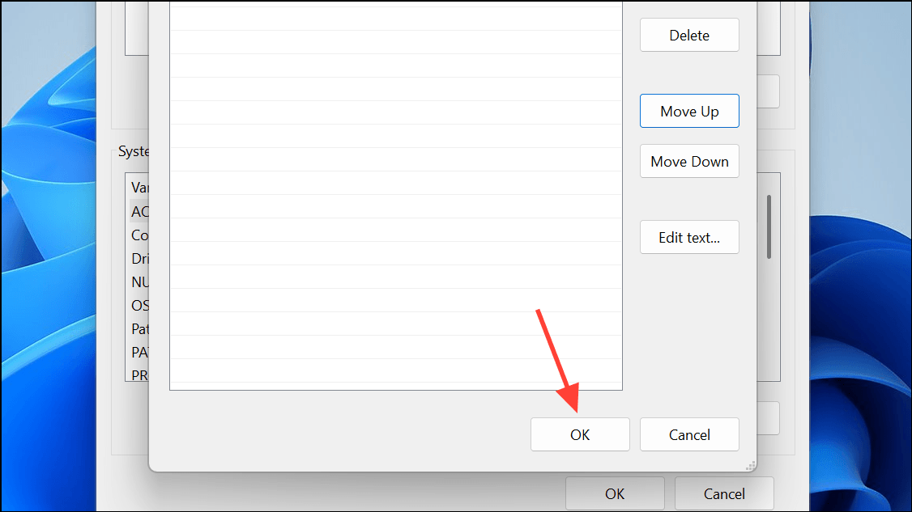
注意事項とよくある落とし穴
| 間違えやすいポイント | 正しい方法 |
|---|---|
| パスの末尾にバックスラッシュがある | 使用するのはC:\Path\To\Python311ではなくC:\Path\To\Python311\ |
| パスの前に余分なスペースがある | 各エントリは前後にスペースのないきれいなパスであるべきです |
| 古いエントリが存在しないフォルダーを指している | 存在しないパスは削除または修正し、パス解決の混乱を避けます |
| 変更後にターミナルを再起動していない | すべてのターミナルウィンドウを完全に閉じてから開き直します。場合によってはサインアウトまたは再起動が必要です |
方法3: Microsoft Store インストールの「アプリ実行エイリアス」を修正する
Microsoft Store から Python をインストールした場合、python コマンドの解決は、従来の PATH 編集ではなく、「アプリ実行エイリアス」と WindowsApps ディレクトリに依存します。
操作手順
| 手順 | 操作 |
|---|---|
| 1 | Windows の設定を開き、「アプリ実行エイリアスの管理」を検索します |
| 2 | 「python.exe」と「python3.exe」のpython.exe 和 python3.exe切り替えスイッチを見つけます：オンにするエイリアスを有効にし、オフにするpython.org 版との競合を避けます |
| 3 | ユーザー PATH に WindowsApps が含まれていることを確認します%USERPROFILE%\AppData\Local\Microsoft\WindowsApps |
| 4 | ターミナルを開き直して検証します |
アプリ実行エイリアス設定の入り口：
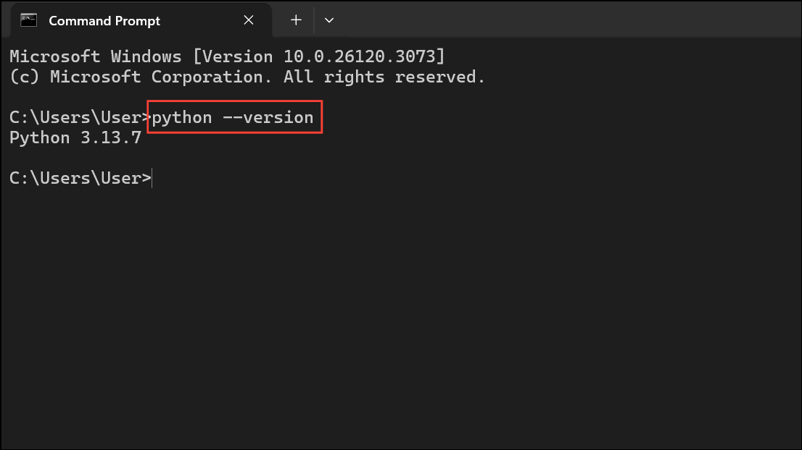
python.exe と python3.exe のエイリアス切り替えスイッチ：
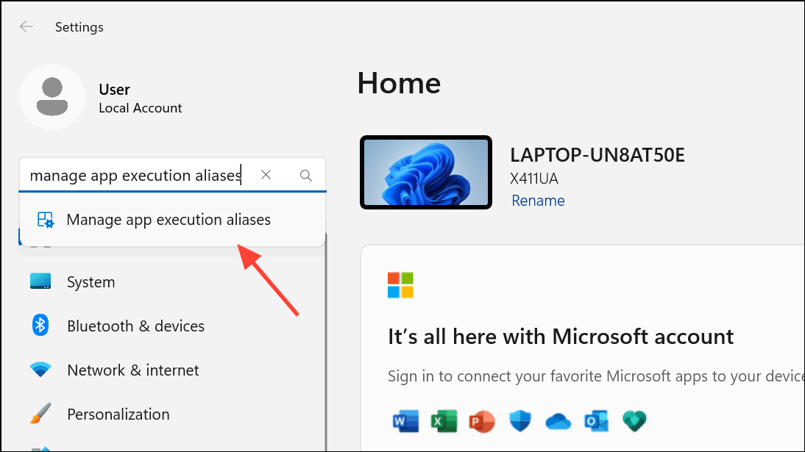
「python」と入力した場合に、
pythonMicrosoft Store が開き、Python が実行されない場合は、エイリアスが Store を指していることを意味します。該当バージョンのエイリアスをオフにし、python.org 版をダウンロードしてインストールするか、後述の Python Launcher（py コマンド）を使用してください。
方法4: PATH を編集する代わりに Python Launcher を使用する
Python Launcher（py.exePython Launcher（py）は python.org のビルド版と一緒にインストールされ、タグに基づいてインストール済みの Python バージョンを自動的に特定できるため、PATH の競合を完全に回避できます。
これは公式推奨のマルチバージョン管理方法です。PATH を変更することなく、プロジェクトごとに特定の Python バージョンを固定できます。
操作手順
Launcher のバージョンを確認：
py --version
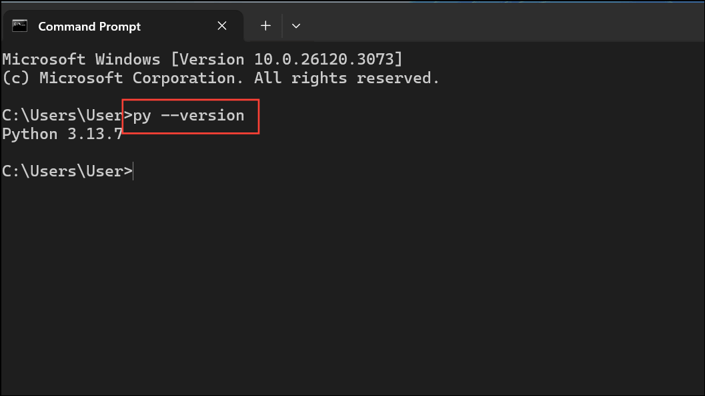
必要な Python バージョンを明示的に実行：
py -3 py -3.11 py -3.10 -m pip --version
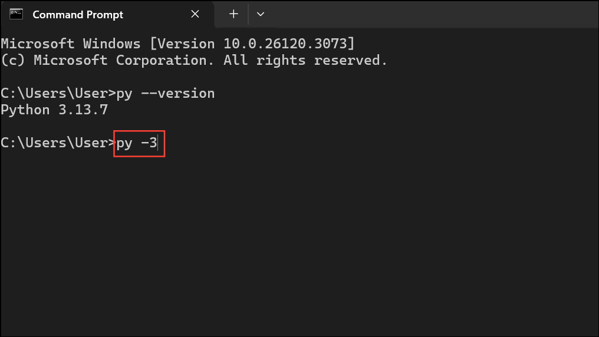
Launcher を使用した仮想環境の作成と使用：
# 使用指定版本创建虚拟环境 py -3.11 -m venv venv # 激活虚拟环境 venv\Scripts\activate # 在虚拟环境中确认 Python 版本 python --version
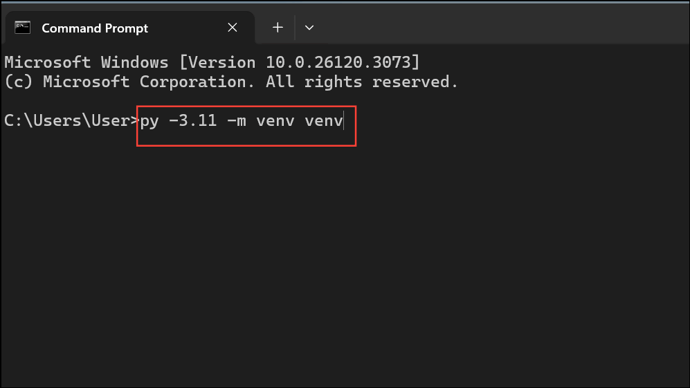
補足説明
| コマンド | 説明 |
|---|---|
py --list |
検出されたすべての Python ランタイムバージョンを表示します |
py -3.11 |
指定したバージョンの Python 対話型インタプリタを起動します |
py -3.11 -m pip install 包名 |
指定したバージョンの Python にサードパーティ製パッケージをインストールします |
py Launcher を使用する場合、PATH を手動で編集する手順を完全に省略できます。Launcher はインストール済みのすべての Python バージョンを自動的に検出し、必要に応じて選択できます。これは Python 3.10 と 3.12 の両方が必要な開発者にとって特に便利です。
クイック検証とトラブルシューティング
どの実行ファイルが実行されているかを確認する
where python where python3 where py
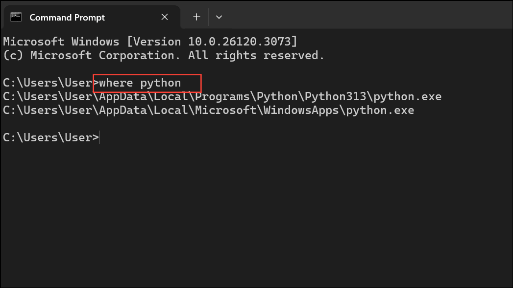
pip と Scripts を検証する
pip --version where pip
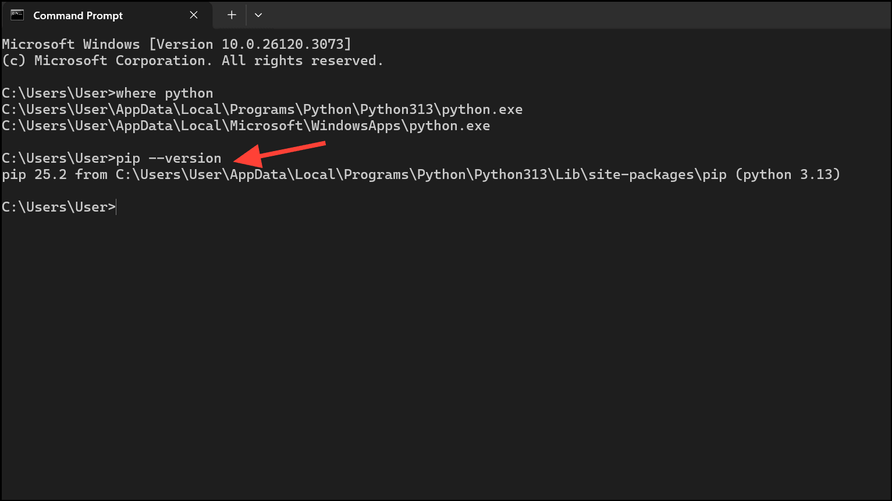
よくある問題のトラブルシューティング
| 問題 | 解決策 |
|---|---|
入力python後に Microsoft Store を開く |
「アプリ実行エイリアス」で対応するエイリアスをオフにするか、またはpyコマンドで起動する |
| PATH を変更しても反映されない | すべてのターミナルと IDE（VS Code など）を完全に閉じ、必要に応じてサインアウトまたは再ログインする |
| 複数の Python バージョンの競合 | Python Launcher を使用する（py）でバージョンを正確に選択し、仮想環境と組み合わせてプロジェクトの依存関係を分離する |
まとめ
PATH が正しく設定されれば——または Python Launcher を使い始めれば——任意の場所で Python と pip を実行でき、完全なパスを入力する必要はありません。
複数バージョンの環境では、Python Launcher を使用してバージョンを正確に選択し、仮想環境と組み合わせて各プロジェクトの依存関係の分離を保護することを強くお勧めします。
| 方法 | 適用シナリオ | 推奨度 |
|---|---|---|
| 公式インストーラーで PATH にチェックを入れる | Python の初回インストールまたは再インストール | 最高 |
| ユーザー PATH を手動で編集する | インストール済みだが PATH 設定を忘れた場合 | 中 |
| アプリ実行エイリアス | Microsoft Store 版 Python | 低い（他のバージョンと競合しやすい） |
| Python Launcher (py) | 複数バージョンの共存、プロジェクト単位のバージョン管理 | 最高 |
クリックしてノートを共有
<p style="font-size:14px;">ノートは本記事の内容を拡張したものである必要があります！</p><br> <p style="font-size:12px;"><a href="../tougao.html" target="_blank">記事投稿は、こちらをクリック</a></p> <p style="font-size:14px;"><a href="./runoob-user-test-intro.html" target="_blank">登録招待コードの取得方法</a></p> <h3 class="text-muted"><i class="fa fa-info-circle" aria-hidden="true"></i> ノートを共有する前に必ず<a href=".." class="runoob-pop">ログイン</a>してください！</h3> <p><a href="./runoob-user-test-intro.html" target="_blank">登録招待コードの取得方法</a></p>